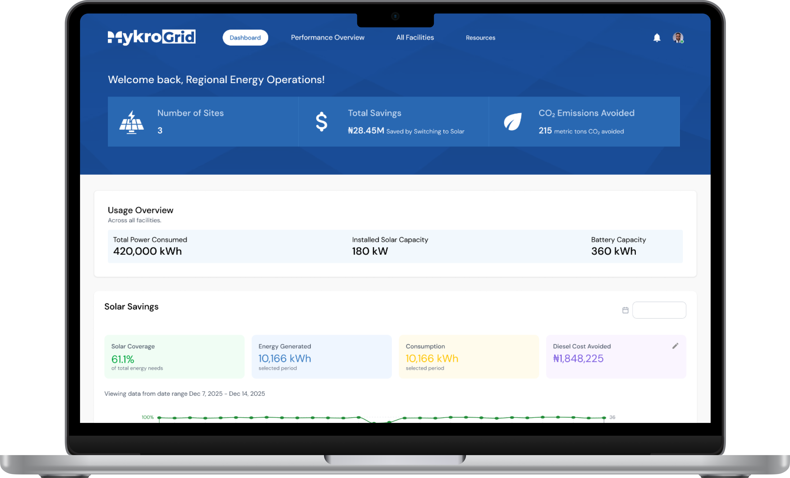
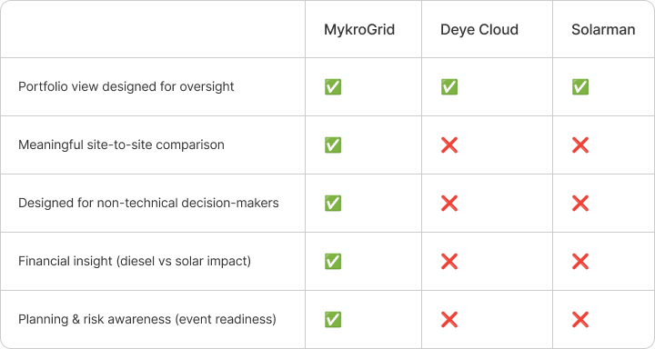
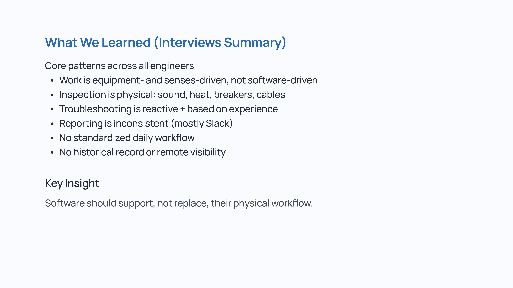
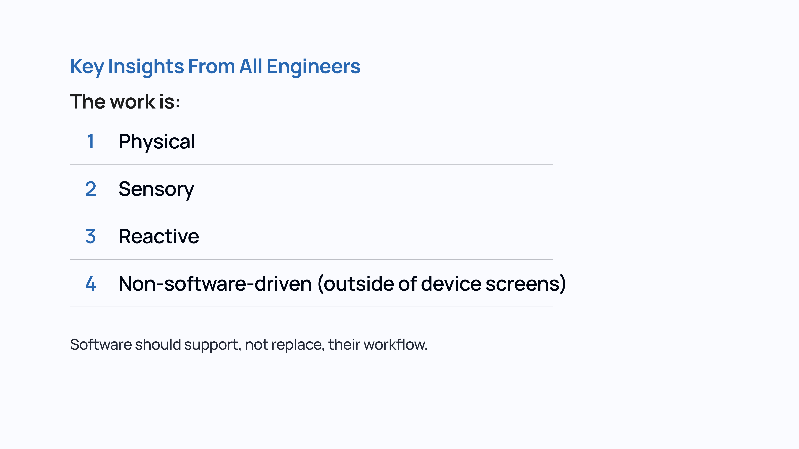
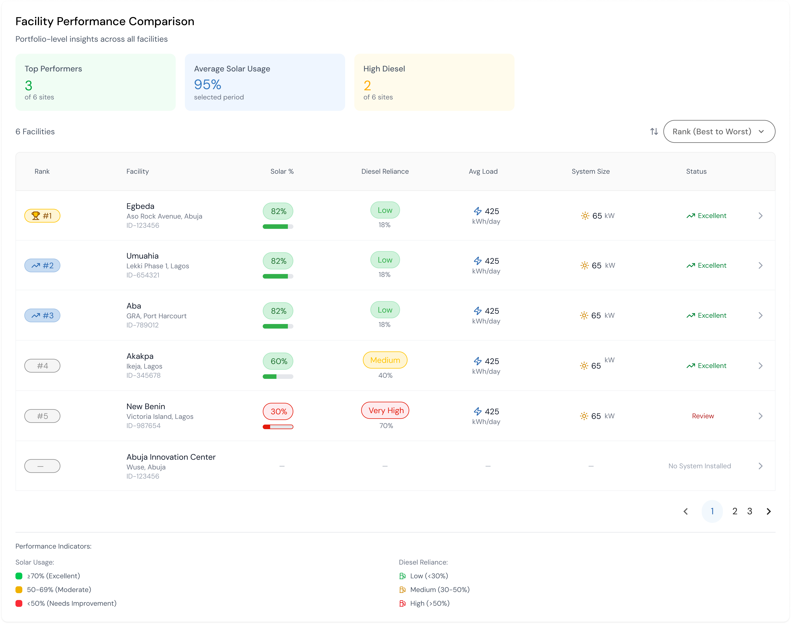
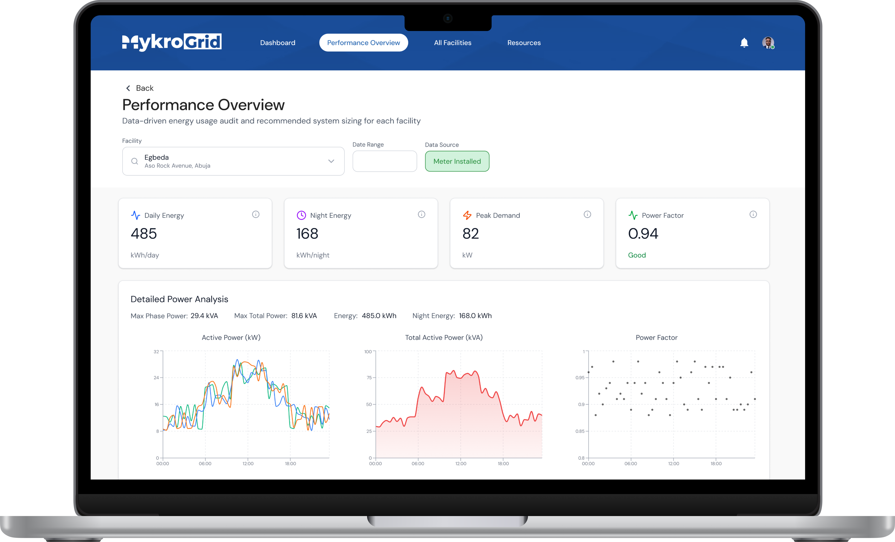
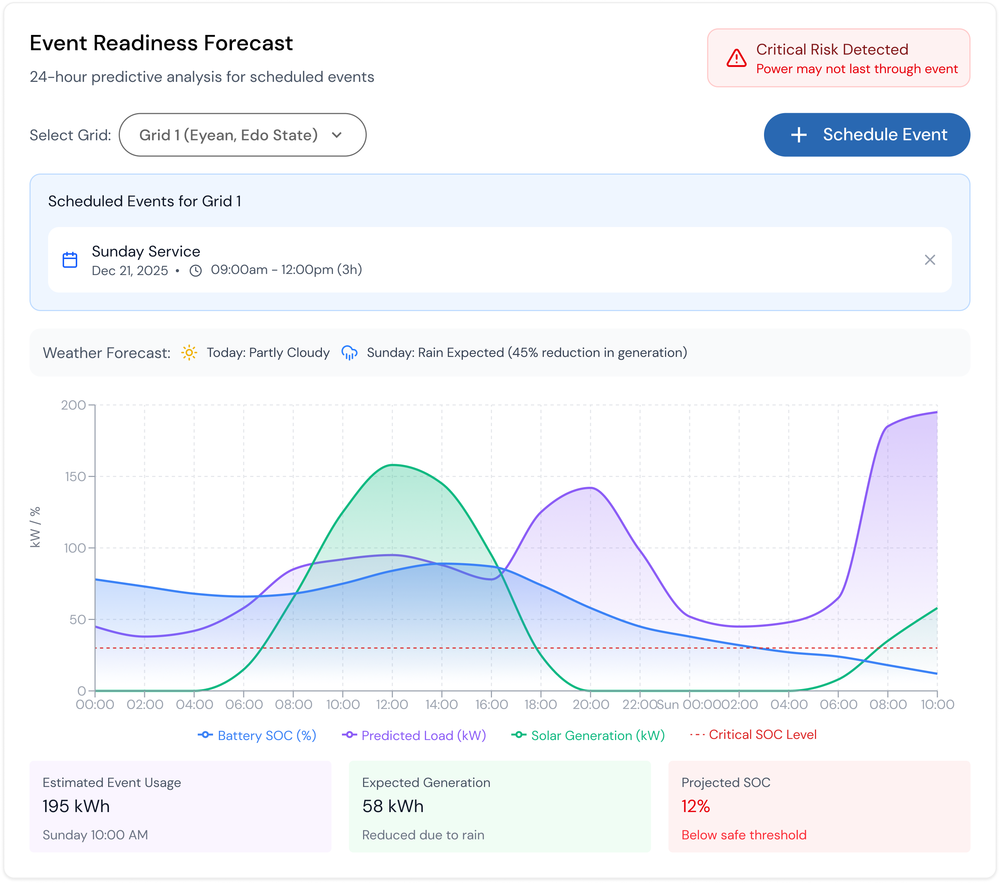

01
No Product to Show
MykroGrid was pitching enterprise clients with no platform to demonstrate. Deals stalled without a tangible product.
We needed something real enough to close deals, built on real enough research to actually work.

OVERVIEW
01
The Brief
Design an enterprise energy management platform for MykroGrid — a cloud operations and facilities monitoring tool giving energy teams a single pane of glass for site health, alarms, and interventions across multiple facilities.
02
The Problem
MykroGrid had no platform to offer enterprise clients managing multiple facilities. Without a product to show, closing larger deals was nearly impossible. Internally, our own engineers were managing grids manually with no standardized workflow, no historical record, and no remote visibility.
03
The Outcome
A concept design used to pitch and close enterprise clients — built on real insights from our own field engineers — pushed directly into development once deals were signed and now live across multiple facilities.
THE PROBLEM
01
MykroGrid was pitching enterprise clients with no platform to demonstrate. Deals stalled without a tangible product.
We needed something real enough to close deals, built on real enough research to actually work.
02
Enterprise clients manage multiple facilities with different energy profiles, alert thresholds, and operational teams.
One dashboard had to serve many contexts — informed by engineers who work across multiple grid sites daily.
03
Energy operations can’t afford missed alerts or confusing interfaces. The design had to prioritize clarity above all else.
In energy infrastructure, a missed alert isn’t a UX problem — it’s an operational failure.
COMPETITIVE LANDSCAPE

WHAT WE SET OUT TO DO
GOAL 01
Give energy teams a single pane of glass for site health, alarms, and interventions across all facilities.
GOAL 02
Design and ship fast enough to support active enterprise sales conversations.
GOAL 03
Build a foundation flexible enough to serve clients with one facility or twenty.
HOW WE GOT THERE




THE RESULT

OUTCOMES
The concept design was used to pitch and close enterprise clients before a single line of code was written.
Once deals were signed the design went directly into development — now live across multiple facilities.
Delivered a full platform design in under 3 months, prioritizing desktop with targeted mobile guidance for key screens.
LOOKING BACK